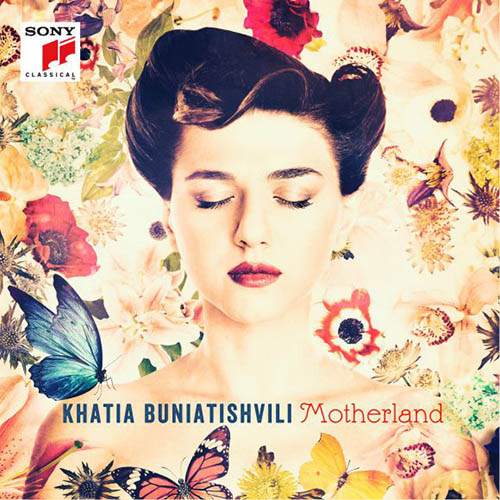
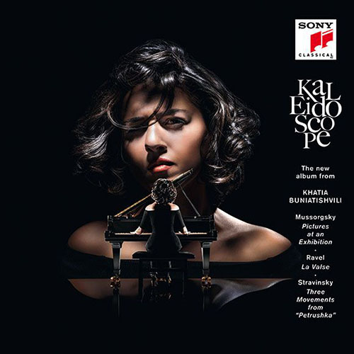
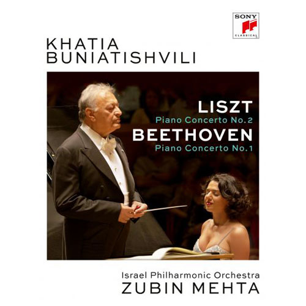

Discography



Born in 1987 in Georgia, Buniatishvili’s extraordinary talent was recognized when she was very young. She gave her first concert with the Tbilisi Chamber Orchestra when she was six years old, and appeared internationally at age 10.
Above all, she embraces pianists from earlier generations such as Rachmaninoff, Richter and Gould. During her studies at Tbilisi’s State Conservatoire, she won a special prize at the Horowitz International Competition for Young Pianists in Kiev in 2003 as well as first prize at the Foundation to Assist Young Georgian Musicians competition set up by Elisabeth Leonskaya. She became acquainted with Oleg Maisenberg, who persuaded her to transfer to Vienna’s University of Music and Performing Arts. Winner of the Bronze Medal at the 12th Arthur Rubinstein Piano Master Competition in 2008, she was also distinguished as the Best Performer of a Chopin piece and as Audience Favourite.
Khatia speaks 5 languages fluently: Georgian, French, English, German, and Russian. She is a two-time ECHO Klassik Award winner.
Learn more about KhatiaKhatia Buniatishvili
ხატია ბუნიათიშვილი
Born
June 21, 1987
Batumi, Georgia
Citizenship
Georgia, France
Occupation
Classical pianist